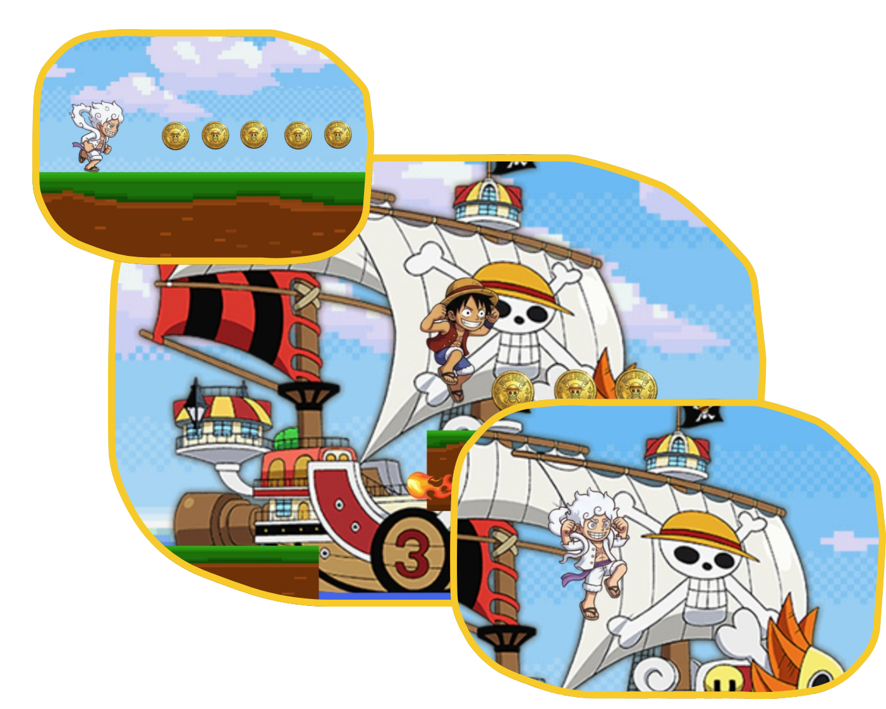
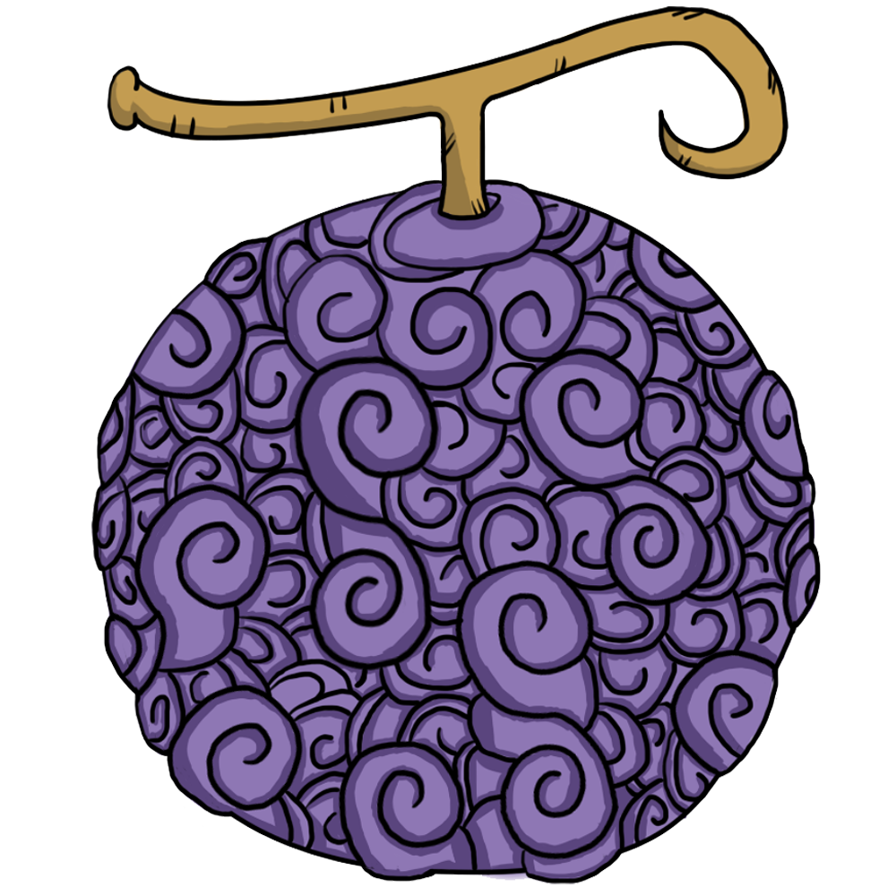

Luffy Run é um jogo de ação e plataforma em ritmo acelerado onde você controla Monkey D. Luffy em uma corrida frenética pelo Grand Line. O objetivo principal é simples, mas desafiador: correr o mais longe possível, acumular uma montanha de moedas de ouro (Berries) e, acima de tudo, sobreviver! E você precisa fazer tudo isso rápido: cada corrida é completa em apenas 30 Segundos! O relógio está correndo contra o Rei dos Piratas.
Prepare-se para uma experiência intensa onde cada milissegundo conta. O mapa é um obstáculo constante, com plataformas flutuantes, muito cuidado para não cair no mar ou ser atingido pelo projétil. O maior de todos os perigos? O tempo! Você deve maximizar sua distância e Berries coletadas antes que o cronômetro chegue a zero.


Espalhados pelo mapa, você encontrará o booster supremo: a lendária Gomu Gomu no Mi. Ao coletá-la, Luffy libera seu poder despertado por 5 segundos, ativando o "Gear 5"! Sob esta transformação, Luffy se torna imparável:
Velocidade Maximizada: Sua velocidade de corrida dobra, permitindo que você cubra distâncias incríveis num piscar de olhos.
Saltos de Gigante: Pule por cima de plataformas inteiras com saltos incrivelmente altos e distantes. Nada pode pará-lo!
Invencibilidade do Despertar: O Gear 5 o torna invulnerável a todos os projéteis de fogo eles não podem pará-lo! Apenas quedas no mar podem acabar com a festa, exigindo que você mantenha a precisão até mesmo em velocidade máxima.
Domine a corrida, colete Berries, ative o Gear 5 e veja quão longe você pode ir em 30 segundos! Uma animação de pontuação de "Recompensa" mostrará seus Berries no final de cada corrida intensa. O Grand Line espera por você!